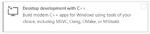
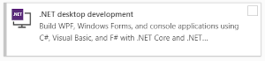

|
Thermal Camera SDK 11.4.10
SDK for Optris Thermal Cameras
|
|
Thermal Camera SDK 11.4.10
SDK for Optris Thermal Cameras
|
The SDK itself is implemented in C++ but offers bindings to other language like C# and Python 3. One of the first decisions you have to make is to choose the programming language with which you want to interact with the SDK. The bindings offer full access to the exposed C++ API. However, there are some minor omissions due to technical restrictions of the target languages. Their impact on the available feature set is negligible.
The following table lists some use cases as well as some downsides for each language and is by no means exhaustive:
| Language | Use Case | Downsides |
|---|---|---|
| C++ | Lowest latency and maximum performance | Complexity |
| C# | GUI application development | Minor performance penalties due to bindings |
| Python 3 | Prototyping and data science | Not suitable for high performance demands (slow function calls, global interpreter lock) |
The bindings are automatically generated with the help of SWIG and always consist out of the to following parts:
With C++ you first of all require a compatible compiler to translate your project into an executable or a library. With regards to your operating system the SDK supports the following compilers:
In addition to the compiler you need to choose which build system you want to use. The SDK supports the following options out of the box:
On Linux the native package manager apt will automatically install the GNU compiler and CMake as dependencies of the SDK package.
On Windows you can easily use either the built-in capabilities of Visual Studio or you can use CMake. Regardless of your choice you need to install the Microsoft Visual C++ compiler. Navigate to the Visual Studio website and download the installer. The following descriptions are based on the freely available Community Edition 2022:
Workload Desktop development with C++ 
Individual components and scroll down to the section Compiler, Buildtools and Runtimes and select the following additional components:Visual Studio core editor, if you wish to use another IDE/code editor.If you want to use CMake as the build system, you have to visit the CMake website to download their Windows installer. Run it to install CMake on your system.
The C# bindings of the SDK are generated based on the __.NET SDK LTS version 8.0__. Therefore, you need to install this SDK along with its corresponding runtime. On Linux you can conveniently do this with the help of the native package manager apt. Just run the following command:
On Windows you can refer to the Visual Studio installer to get both the .NET SDK and runtime. Navigate to the Visual Studio website and download the installer. The following descriptions are based on the freely available Community Edition 2022:
Workload .NET desktop development 
Visual Studio core editor, if you wish to use another IDE/code editor.In order to use the Python 3 bindings of the SDK you require the Python 3 interpreter and the NumPy library.
Linux
On Linux the bindings are compiled against the default Python 3 and NumPy versions provided by the official APT repositories. Therefore, the recommended way to install the required dependencies is the native package manager apt. Run the following command:
_otcsdk_python.Windows
On Windows the native part of the Python 3 bindings requires at least the following versions of Python 3 and NumPy:
ImportError: DLL load failed while importing _otcsdk_python.Since Windows lacks a central software manager you first have to download the Python 3 installer from its website. After the installation you can use the built-in package manager pip to install NumPy:
To manipulate and view false color images you may need an additional library like OpenCV. You can install it with the help of the package managers:
Linux
Windows
Depending on your chosen build system, CMake or Visual Studio, you have to take a different approach.
Open your CMakeLists.txt file and add the following find_package() command to instruct CMake to locate the SDK resources:
Then add the library target otcsdk::otcsdk to the target_link_library() command for your build target (here named myTarget):
In this way you build your target against the shared version of the SDK library. If you wish to link statically, use the library target otcsdk::otcsdk_static instead.
SoSCorrectionLib.so with gcc.SoSCorrectionLib.dll (release) or the SoSCorrectionLibd.dll (debug) and the C++ redistributable v14 with MSVC.To compile your CMake project go to the root directory of your project, create a build directory and change into it:
Command CMake to generate the build files and trigger the compilation process:
make or Ninja
msbuild
The build configuration Debug is also supported.
--parallel option with the second command to speed up the compilation process. Make sure, however, that you have enough memory to support all the resulting compilation processes.The Windows SDK installer automatically sets up the system wide environment variable OTC_SDK_DIR that holds the path to your chosen installation directory. You can now use this variable to conveniently setup your Visual Studio C++ project.
After you created a C++ project in Visual Studio open the project properties and modify the following settings:
General pageC++ Language Standard to ISO C++17 Standard (/std:c++17).VC++ Directories page$(OTC_SDK_DIR)\include to the Include Directories.$(OTC_SDK_DIR)\lib to the Library Directories.Input page of the Linker categoryAdditional Dependencies:otcsdk.lib for release builds.otcsdkd.lib for debug builds.With this setup you build your project against the dynamic version of the SDK library. If you wish to link statically against the SDK, you will have to adjust the following settings:
Input page of the Linker categoryAdditional Dependency:otcsdk_static.libds_stream_base.libSoSCorrectionLib.libUrlmon.libSetupapi.libwinmm.liblegacy_stdio_definitions.libotcsdk_staticd.libds_stream_based.libSoSCorrectionLibd.libUrlmon.libSetupapi.libwinmm.liblegacy_stdio_definitions.libPreprocessor page of the C/C++ categoryOTC_SDK_STATIC to the Preprocessor Definitions.OTC_SDK_STATIC ensures that the macro OTC_SDK_API controlling the Windows DLL symbol export and import in the SDK headers is empty. For more details on this subject refer to the MSVC documentation.SoSCorrectionLib.dll (release) or the SoSCorrectionLibs.dll (debug) and the C++ redistributable v14.Create a subfolder classes in your C# project and copy the wrapper C# classes from the SDK install directory to it. They are located in
<SDK Installation Directory>\bindings\csharp\classes on Windows and in/usr/share/otcsdk/csharp/classes on LinuxThe .NET runtime locates and loads the depended shared libraries automatically.
To use the SDK with Python 3 you just need to import the SDK module into your code:
Nothing more needs to be done.